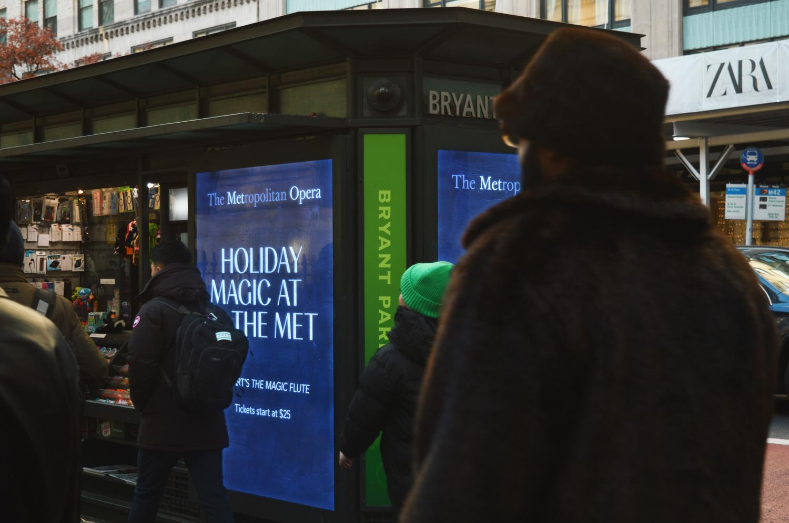
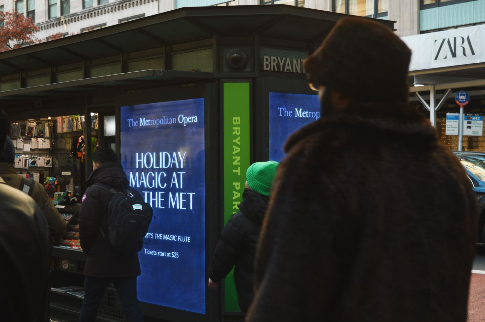

Metropolitan Opera Digital Signage
For many of the Met's productions and ad campaigns, I was responsible for translating the visual identity of the opera or campaign into multiple out-of-home digital formats. This has included Subway Liveboards, Link NYCs, digital signage in Bryant Park, the Lincoln Center Blades and other large screen formats.


Digital Bus Shelter, LinkNYC and Subway Liveboard (mockup) ads for the Met's The Voice Must Be Heard 2025 Campaign
Photography by Zenith Richards
 

Bryant Park motion advertisements for the Met's production of Mozart's The Magic Flute.
Animated illustrations by Mei Kanamoto and the agency London in New York.
Digital Blades Aida takeover in Lincoln Center, Photography by Paola Kudacki